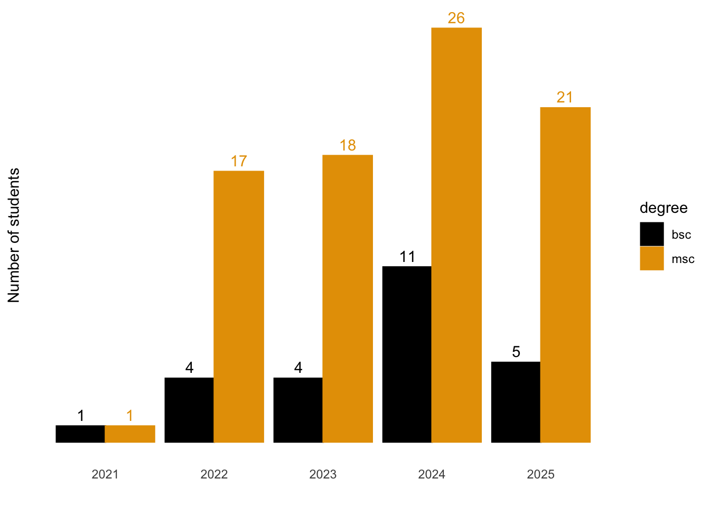

The goal of ghedata is to share data resources that document the work of the Global Health Engineering group at ETH Zurich. The data can be used for research, teaching, and learning purposes. The data is available as an R data package, in CSV and XLSX formats.
Installation
You can install the development version of ghedata from GitHub with:
# install.packages("devtools")
devtools::install_github("global-health-engineering/ghedata")
## Run the following code in console if you don't have the packages
## install.packages(c("dplyr", "knitr", "readr", "stringr", "gt", "kableExtra"))
library(dplyr)
library(knitr)
library(readr)
library(stringr)
library(gt)
library(kableExtra)
library(ggthemes)
library(ggplot2)Alternatively, you can download the individual datasets as a CSV or XLSX file from the table below.
- Click Download CSV. A window opens that displays the CSV in your browser.
- Right-click anywhere inside the window and select “Save Page As…”.
- Save the file in a folder of your choice.
| dataset | CSV | XLSX |
|---|---|---|
| people | Download CSV | Download XLSX |
Data
The package provides access to one data resource.
people
The dataset people contains data about people that have worked for the group. This includes staff, as well as undergraduate student projects.
It has 96 observations and 7 variables.
people |>
head(3) |>
gt::gt() |>
gt::as_raw_html()| project_id | degree | type | b_m_student | start_date | year | thesis_title |
|---|---|---|---|---|---|---|
For an overview of the variable names, see the following table.
| variable_name | variable_type | description |
|---|---|---|
| project_id | character | Unique identifier for each person using a combination of other metadata. Folder name on Google Drive. |
| degree | character | Categorical variable with four levels: bsc, msc, phd, staff. |
| type | character | Categorical variable with six levels: hiwi, intern, post-doc, scientific-assitant, sem-proj, thesis. |
| b_m_student | character | Binary variable to identify if person is BSc or MSc students. Levels: yes, no. |
| start_date | Date | Start date of the person. |
| year | numeric | Year of the start date. |
| thesis_title | character | Title of the thesis. |
Example
library(ghedata)
undergrad_students <- people |>
filter(b_m_student == "yes") |>
filter(!is.na(project_id)) |>
filter(!is.na(year))So far, GHE has supervised 81 projects of which 19 were done by BSc and 62 by MSc students.
undergrad_students |>
count(year, degree) |>
ggplot(aes(x = factor(year), y = n, label = n,
color = degree, group = degree)) +
geom_line() +
geom_label() +
labs(x = "Degree",
y = "Number of students") +
scale_color_colorblind() +
theme_minimal() +
theme(panel.grid = element_blank(),
axis.text.y = element_blank())
License
Data are available as CC-BY.
Citation
Please cite this package using:
citation("ghedata")
#> To cite package 'ghedata' in publications use:
#>
#> Schöbitz L (2024). _ghedata: What the Package Does (One Line, Title
#> Case)_. R package version 0.0.0.9000,
#> <https://github.com/global-health-engineering/ghedata>.
#>
#> A BibTeX entry for LaTeX users is
#>
#> @Manual{,
#> title = {ghedata: What the Package Does (One Line, Title Case)},
#> author = {Lars Schöbitz},
#> year = {2024},
#> note = {R package version 0.0.0.9000},
#> url = {https://github.com/global-health-engineering/ghedata},
#> }